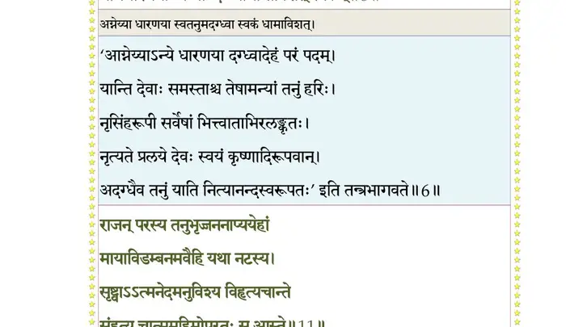
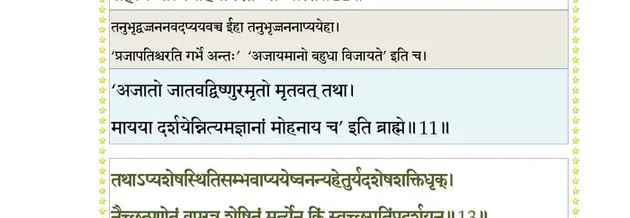
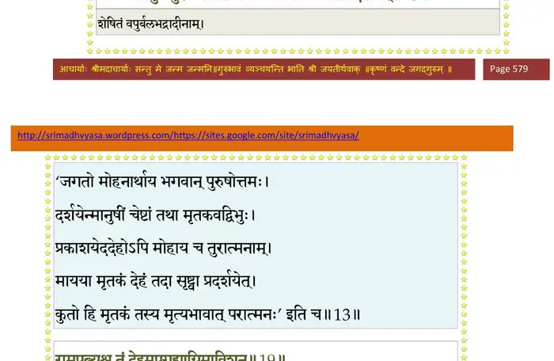
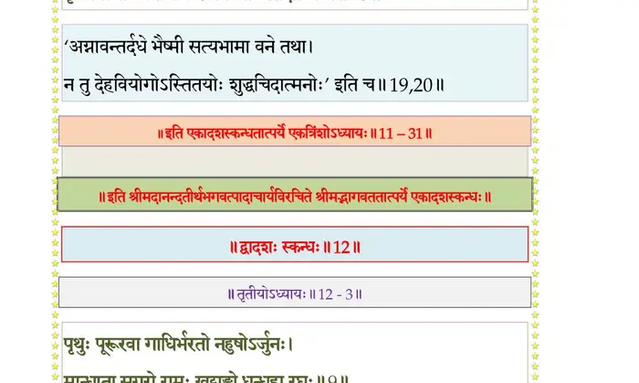

स्कन्ध 11 · अध्याय 31
श्लोक १
श्रीशुक उवाच–
अथ तत्रागमद् ब्रह्मा भवान्या च समं भवः ।
महेन्द्रप्रमुखा देवा मुनयः सप्रजेश्वराः ।। १ ।।
अथ तत्रागमद् ब्रह्मा भवान्या च समं भवः ।
महेन्द्रप्रमुखा देवा मुनयः सप्रजेश्वराः ।। १ ।।
श्लोक २
पितरः सिद्धगन्धर्वा विद्याधरमहोरगाः ।
चारणा यक्षरक्षांसि किन्नराप्सरसो द्विजाः ।। २ ।।
चारणा यक्षरक्षांसि किन्नराप्सरसो द्विजाः ।। २ ।।
श्लोक ३
द्रष्टुकामा भगवतो निर्याणं परमोत्सुकाः ।
गायन्तश्च गृणन्तश्च शौरेः कर्माणि जन्म च ।। ३ ।।
गायन्तश्च गृणन्तश्च शौरेः कर्माणि जन्म च ।। ३ ।।
श्लोक ४
ववृषुः पुष्पवर्षाणि विमानावलिभिर्नभः ।
कुर्वन्तः सङ्कुलं राजन् भक्त्या परमया युताः ।। ४ ।।
कुर्वन्तः सङ्कुलं राजन् भक्त्या परमया युताः ।। ४ ।।
श्लोक ५
भगवानपि तान् वीक्ष्य विभूतीरात्मनो विभुः ।
संयुज्यात्मनि चात्मानं पद्मनेत्रे न्यमीलयत् ।। ५ ।।
संयुज्यात्मनि चात्मानं पद्मनेत्रे न्यमीलयत् ।। ५ ।।
श्लोक ६
लोकाभिरामां स्वतनुं धरणाध्यानमङ्गलाम् ।
योगधारणयाऽऽग्नेय्याऽदग्ध्वा धामाविशत् स्वकम् ।। ६ ।।
योगधारणयाऽऽग्नेय्याऽदग्ध्वा धामाविशत् स्वकम् ।। ६ ।।
भागवततात्पर्यनिर्णय

श्लोक ७
दिवि दुन्दुभयो नेदुः पेतुः सुमनसश्च खात् ।
सत्यं धर्मो धृतिर्भूतिः कीर्तिः श्रीश्चानु तं ययुः ।। ७ ।।
सत्यं धर्मो धृतिर्भूतिः कीर्तिः श्रीश्चानु तं ययुः ।। ७ ।।
श्लोक ८
देवादयो ब्रह्ममुखा आविशन्तं स्वधामनि ।
अविज्ञातगतिं कृष्णं दद्दशुश्चातिविस्मिताः ।। ८ ।।
अविज्ञातगतिं कृष्णं दद्दशुश्चातिविस्मिताः ।। ८ ।।
श्लोक ९
सौदामिन्या यथाऽऽकाशे यान्त्या भित्त्वाऽभ्रमण्डलम् ।
गतिर्न लक्ष्यते मर्त्यैस्तथा कृष्णस्य दैवतैः ।। ९ ।।
गतिर्न लक्ष्यते मर्त्यैस्तथा कृष्णस्य दैवतैः ।। ९ ।।
श्लोक १०
ब्रह्मरुद्रादयस्ते तु दृष्ट्वा योगगतिं हरेः ।
विस्मितास्तां प्रशंसन्तः स्वंस्वं लोकं ययुस्तदा।। १० ।।
विस्मितास्तां प्रशंसन्तः स्वंस्वं लोकं ययुस्तदा।। १० ।।
श्लोक ११
राजन् परस्य तनुभृज्जननाप्ययेहां
मायाविडम्बनमवैहि यथा नटस्य ।
सृष्ट्वाऽऽत्मनेदमनुविश्य विहृत्य चान्ते
संहृत्य चात्ममहिमोपरतः स आस्ते ।। ११ ।।
मायाविडम्बनमवैहि यथा नटस्य ।
सृष्ट्वाऽऽत्मनेदमनुविश्य विहृत्य चान्ते
संहृत्य चात्ममहिमोपरतः स आस्ते ।। ११ ।।
भागवततात्पर्यनिर्णय

श्लोक १२
मर्त्येन यो गुरुसुतं यमनीतलोकं
त्वां चानयच्छरणदः परमास्त्रदग्धम् ।
जिग्येऽन्तकान्तक मपीशतनावनीशः
(जिग्ये पुरेऽन्तकमपीशतनावनीशः)
किं स्वावने स्वरनयन् मृगयोः स्वदेहे (मृगयुं सदेहम्)।। १२ ।।
त्वां चानयच्छरणदः परमास्त्रदग्धम् ।
जिग्येऽन्तकान्तक मपीशतनावनीशः
(जिग्ये पुरेऽन्तकमपीशतनावनीशः)
किं स्वावने स्वरनयन् मृगयोः स्वदेहे (मृगयुं सदेहम्)।। १२ ।।
श्लोक १३
तथाप्यशेषस्थितिसम्भवाप्ययेषु-
अनन्यहेतुर्यदशेषशक्तिधृक् ।
नैच्छत् प्रणेतुं वपुरत्र शेषितं
मर्त्येन किं स्वस्थ (स्वस्य) गतिं प्रदर्शयन् ।। १३ ।।
अनन्यहेतुर्यदशेषशक्तिधृक् ।
नैच्छत् प्रणेतुं वपुरत्र शेषितं
मर्त्येन किं स्वस्थ (स्वस्य) गतिं प्रदर्शयन् ।। १३ ।।
भागवततात्पर्यनिर्णय

श्लोक १४
य एतां प्रातरुत्थाय कृष्णस्य पदवीं पराम् ।
प्रयतः कीर्तयेद् भक्त्या तामेवाप्नोत्यनुत्तमाम्।। १४ ।।
प्रयतः कीर्तयेद् भक्त्या तामेवाप्नोत्यनुत्तमाम्।। १४ ।।
श्लोक १५
दारुको द्वारकामेत्य वसुदेवोग्रसेनयोः ।
पतित्वा चरणावस्रैर्न्यषिञ्चत् कृष्णविच्युतः।। १५ ।।
पतित्वा चरणावस्रैर्न्यषिञ्चत् कृष्णविच्युतः।। १५ ।।
श्लोक १६
कथयामास निधनं वृष्णीनां कृत्स्नशो नृप ।
तच्छ्रुत्वोद्विग्नहृदया जनाः शोकविमूर्च्छिताः।। १६ ।।
तच्छ्रुत्वोद्विग्नहृदया जनाः शोकविमूर्च्छिताः।। १६ ।।
श्लोक १७
तत्र वै त्वरिता जग्मुः कृष्णविश्लेषविह्वलाः ।
व्यसवः शेरते यत्र ज्ञातयो घ्नन्त आयुधैः।। १७ ।।
व्यसवः शेरते यत्र ज्ञातयो घ्नन्त आयुधैः।। १७ ।।
श्लोक १८
देवकी रोहिणी चैव वसुदेवस्तथा सुतौ ।
कृष्णरामावपश्यन्तः शोकार्ता विजहुः स्मृतिम्।। १८ ।।
कृष्णरामावपश्यन्तः शोकार्ता विजहुः स्मृतिम्।। १८ ।।
श्लोक १९
प्राणांश्च विजहुस्तत्र भगवद्विरहातुराः ।
उपगुह्य पतींस्तात चितामारुरुहुः स्त्रियः ।। १९ ।।
उपगुह्य पतींस्तात चितामारुरुहुः स्त्रियः ।। १९ ।।
श्लोक २०
रामपत्न्यश्च तं देहमुपगुह्याग्निमाविशन् ।
वसुदेवपत्न्यस्तद्गात्रं प्रद्युम्नादीन् हरेः स्नुषाः ।
कृष्णपत्न्योऽविशन्नग्निं रुग्मिण्याद्यास्तदात्मिकाः।। २० ।।
वसुदेवपत्न्यस्तद्गात्रं प्रद्युम्नादीन् हरेः स्नुषाः ।
कृष्णपत्न्योऽविशन्नग्निं रुग्मिण्याद्यास्तदात्मिकाः।। २० ।।
भागवततात्पर्यनिर्णय

श्लोक २१
अर्जुनः प्रेयसः सख्युः कृष्णस्य विरहातुरः ।
आत्मानं सान्त्वयामास कृष्णगीतैः सदुक्तिभिः।। २१ ।।
आत्मानं सान्त्वयामास कृष्णगीतैः सदुक्तिभिः।। २१ ।।
श्लोक २२
बन्धूनां नष्टगोत्राणामर्जुनः साम्परायिकम् ।
हतानां कारयामास यथावदनुपूर्वशः ।। २२ ।।
हतानां कारयामास यथावदनुपूर्वशः ।। २२ ।।
श्लोक २३
द्वारकां हरिणा त्यक्तां समुद्रोऽप्लावयत् क्षणात् ।
वर्जयित्वा महाराज श्रीमद्भगवदालयम् ।। २३ ।।
वर्जयित्वा महाराज श्रीमद्भगवदालयम् ।। २३ ।।
श्लोक २४
नित्यं सन्निहितस्तत्र भगवान् मधुसूदनः ।
स्मृत्याऽशेषाशुभहरः सर्वमङ्गलमङ्गलः ।। २४ ।।
स्मृत्याऽशेषाशुभहरः सर्वमङ्गलमङ्गलः ।। २४ ।।
श्लोक २५
स्त्रीबालवृद्धानादाय हतशेषान् धनञ्जयः ।
इन्द्रप्रस्थं समावेश्य वज्रं तत्राभ्यषेचयत् ।। २५ ।।
इन्द्रप्रस्थं समावेश्य वज्रं तत्राभ्यषेचयत् ।। २५ ।।
श्लोक २६
श्रुत्वा सुहृद्वधं राजन्नर्जुनात् ते पितामहाः ।
त्वां तु वंशधरं कृत्वा जग्मुः सर्वे महापथम् ।। २६ ।।
त्वां तु वंशधरं कृत्वा जग्मुः सर्वे महापथम् ।। २६ ।।
श्लोक २७
य एतद् देवदेवस्य विष्णोः कर्माणि जन्म च ।
कीर्तयेच्छ्रद्धया मर्त्यः सर्वपापैः प्रमुच्यते ।। २७ ।।
कीर्तयेच्छ्रद्धया मर्त्यः सर्वपापैः प्रमुच्यते ।। २७ ।।
श्लोक २८
इत्थं हरेर्भगवतो रुचिरावतारं
वीर्याणि चास्य चरितानि च सत्तमानि (मङ्गलानि) ।
अन्यत्र चेह च श्रुतानि गृणन् मनुष्यो
भक्तिं परां परमंहसगतौ लभेत ।। २८ ।।
वीर्याणि चास्य चरितानि च सत्तमानि (मङ्गलानि) ।
अन्यत्र चेह च श्रुतानि गृणन् मनुष्यो
भक्तिं परां परमंहसगतौ लभेत ।। २८ ।।
।। इति श्रीमद्भागवते एकादशस्कन्धे एकत्रिंशोऽध्यायः ।।